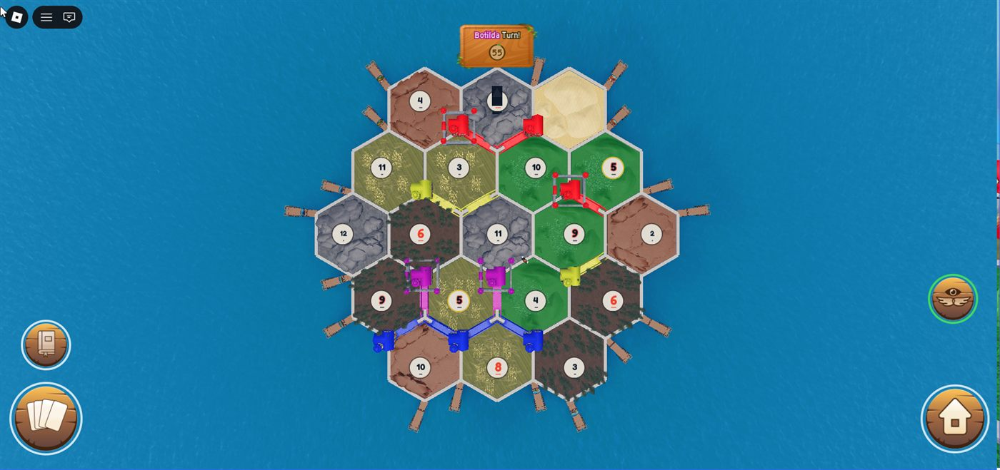
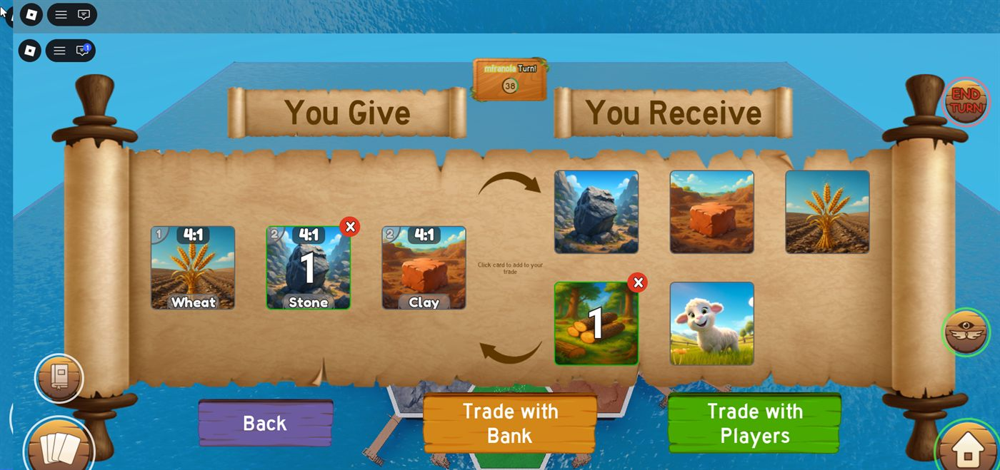
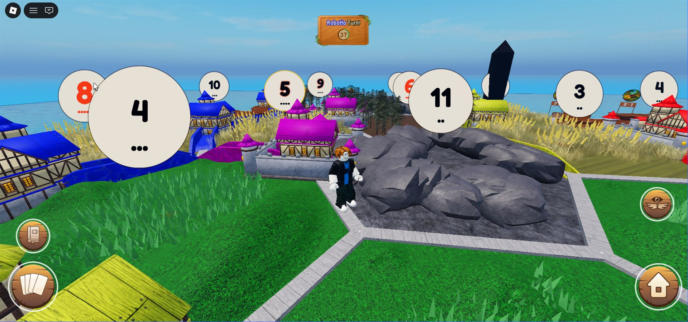

What I do
I am a Senior QA Engineer at Avature on the Framework team, the core backend layer that roughly 40 product engineering teams build on top of. Database access, Redis caching, metrics registration: when it breaks, it breaks everywhere at once.
The job runs the whole cycle rather than the testing half of it. I find the coverage gap or the architectural risk, write the technical specification and the acceptance criteria, then implement and ship the change in production code myself. There is no handoff between the analysis and the fix.
Because the platform runs on a proprietary in-house framework, the test harnesses, the instrumentation and the release tooling are not things we adopt. They are things we build.
Currently
Owns the progressive rollout of a new framework feature, enabling it incrementally across client instances and measuring performance and production impact at each stage before it goes wider.
Recently
Re-architected monolithic code-style checks that scanned the entire codebase into module-scoped, independently schedulable units, unlocking parallel execution and cutting suite runtime by up to 50%.
Also
Automates server-side operational procedures with Rundeck, and coordinates a weekly working session with 2 QA engineers to prioritise testing and automation work.
Experience
Senior QA Engineer, Framework Team · Avature
Oct 2022 – Present- Owns quality for the core backend framework: database access layer, Redis caching and metrics registration, consumed by ~40 product engineering teams.
- Designs and maintains automated suites across unit, integration, API and end-to-end layers with Selenium WebDriver and custom in-house harnesses, wired into CI/CD pipelines on Docker and Kubernetes.
- Extends the framework's metrics instrumentation so performance regressions in caching and database access paths surface before production.
- Automates operational procedures across server environments with Rundeck jobs, giving QA and development self-service execution of previously manual tasks.
QA Engineer · Avature
Jun 2021 – Oct 2022- Built automated regression and E2E suites with Selenium, replacing recurring manual regression passes each release cycle.
- Ran exploratory, data consistency and regression testing across releases, and authored reproducible defect reports through to resolution.
- Validated backend behaviour by inspecting HTTP traffic and querying MySQL directly to confirm data integrity across services.
Specification
- Languages
- PHP · Python · JavaScript / TypeScript · Luau · Java · SQL · Bash
- Testing & QA
- Test automation frameworks · Selenium WebDriver · Playwright · pytest · unit, integration, API and end-to-end testing · regression and exploratory testing · parallel test execution · test plans and cases · defect tracking · root cause analysis · shift-left testing · Postman · Charles Proxy
- Backend & Data
- REST APIs · MySQL · Redis · caching strategies · SQLite · database design · data consistency validation
- DevOps
- Docker · Kubernetes · CI/CD pipelines · Rundeck · Git and GitHub · Linux · metrics instrumentation · log analysis · monitoring and alerting
- Practice
- Agile / Scrum · SDLC and STLC · release management · progressive rollouts · code review · technical specification writing · mentoring
- Education
- Engineer's Degree, Information Systems Engineering — Universidad Tecnológica Nacional, Córdoba. Graduated June 2024, GPA 8.67 / 10. · Cambridge First Certificate in English
- Spoken
- Spanish: native · English: advanced, professional working proficiency
Catox
Personal project · Luau · React (jsdotlua) · Rodux · Rojo · Wally · TestEZ · Lune
A server-authoritative multiplayer strategy game on Roblox. Players settle a hex island, trade resources and race to build it out. Every one of those state transitions is decided on the server, so no client can invent a move the rules do not allow.
Every RemoteEvent and RemoteFunction routes through a single command gateway instead of being fired directly from game code. Validation, authorization and abuse detection live in that one layer rather than scattered across hundreds of call sites.
Design patterns run through the codebase for the usual reasons — quality, testability, reuse — but the command pattern paid off in a way I had not planned for. Once every event and remote call is a command object, executing one no longer depends on a real Roblox player being there to trigger it.
That is what made bots possible. They issue exactly the same commands a person does, so you can fill a match with them and play without waiting for five friends to be online at the same time.
Tested outside the engine
Roblox has no real way to run a full unit-test suite against core game logic. So the core modules are written headless, with their dependencies injected — which lets them be mocked and run under Lune, outside the engine entirely.



Courts
Personal project · Python · Playwright · asyncio · SQLite · Docker · Telegram
My friends and I play tennis, and we wanted specific courts at specific times. Every time we opened the booking page the high-demand slots were already gone, taken minutes after they opened.
So I built a bot that does the booking for us. It watches availability, and it runs itself on the dates we care about, so we always have a court when we actually want to play.
Getting there meant reverse-engineering an ASP.NET booking platform's internal APIs (ViewState, EventValidation, session-bound tokens) and driving the authenticated flow with Playwright and httpx. Credentials are encrypted at rest with Fernet; sessions, reservations and cached availability persist in SQLite.
Then every booking started failing at once, while booking by hand in a real browser still worked. The platform had quietly tightened its token validation: the bot was fetching booking tokens in one HTTP session and spending them in another. I wrote the whole diagnosis up as a post-mortem afterwards.
How it runs
A Telegram bot is the whole interface: ask it what is free, or let the scheduled job take a slot the moment it opens at midnight.
Also in it
Per-user Fernet-encrypted credentials, a Dockerised deploy with a persistent volume, and pytest coverage over the availability parser using recorded API fixtures.
Get in touch
Open to Senior QA, SDET and backend engineering roles.